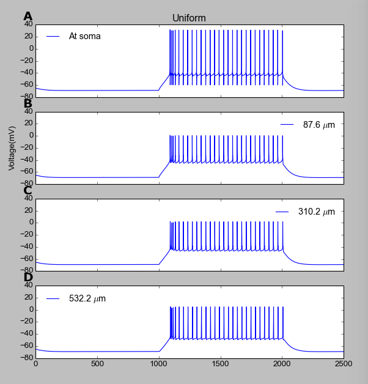

This is the readme for the NEURON with Python files for a
computational model of the interneuron in the lateral geniculate
nucleus. The model was designed for exploring the impact that the
distribution of T-type Ca-channels (T-channels) has on the firing
properties of geniculate interneurons.
The model was used in the article [1]. The model is a simplified
version of a previous model for LGN INs [2], also available at
ModelDB:
http://senselab.med.yale.edu/modeldb/ShowModel.asp?model=140249
Use: These files require NEURON with Python support.
Run: Run the simulation by running the file named mosinit.py file.
Start with a command like:
python -i mosinit.py
Relevant parameters that the user can vary:
Input conditions: Three conditions are defined in the code. Select
one of these by setting the variable Input_code to the integer values
1, 2 or 3.
- Input_cond = 1 (weaker, 1000 ms pulse to the soma, evokes regular
AP-firing)
- Input_cond = 2 (strong, 10 ms pulse to the soma, evokes bursts of
APs)
- Input_cond = 3 (synaptic input to distal dendrite, evokes EPSP)
Distribution of T-channels: Six different distributions are specified
in the code. Select one of these by setting the variable Tdist to
integer values 0,1,2,...7.
- Tdist = 0: No T-channels
- Tdist = 1: All T-channels in soma.
- Tdist = 2: T-channels predominantly located in soma and proximal
dendrites
- Tdist = 3: Uniform distribution of T-channels (same density
everywhere)
- Tdist = 4: T-channels predominantly located halfway between soma and
most distal dendrites.
- Tdist = 5: T-channel density increases linearly with distance from
soma
- Tdist = 6: T-channels predominantly located in distal dendrites.
- Tdist = 7: T-channel distribution used in [2].
By default, Input_cond = 1 (1000 ms somatic current injection), and
Tdist = 3 (uniform).
Figure:
Running the model will produce the output in the figure: The four
panels show the voltage response at four different locations (in the
soma, and at three points along a dendritic branch). When the model is
run with its default parameters it should generate a graph like this:

The model files were supplied by Vaneeda Allken.
References:
[1] Allken V, Chepkoech J-L, Einevoll GT, Halnes G, 2014: The
subcellular distribution of T-type Ca++ channels in interneurons of
the lateral geniculate nucleus. PLoS ONE (in press).
[2] Halnes G, Augustinaite S, Heggelund P, Einevoll GT, Migliore M
(2011). A Multi-Compartment Model for Interneurons in the Dorsal
Lateral Geniculate Nucleus. PLoS Comp. Biol. 7: e1002160
Changelog
2022-12: Python3 migration via 2to3